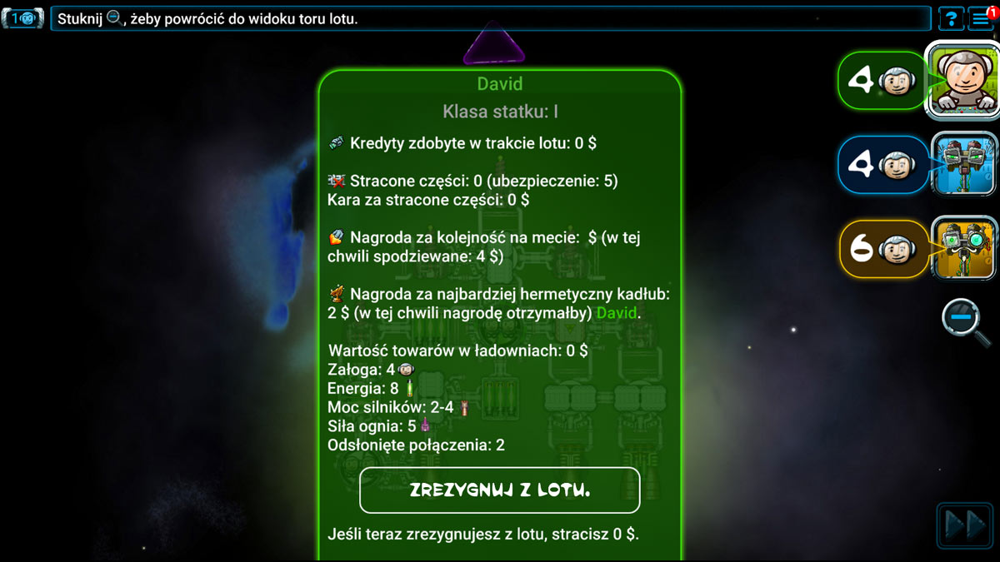
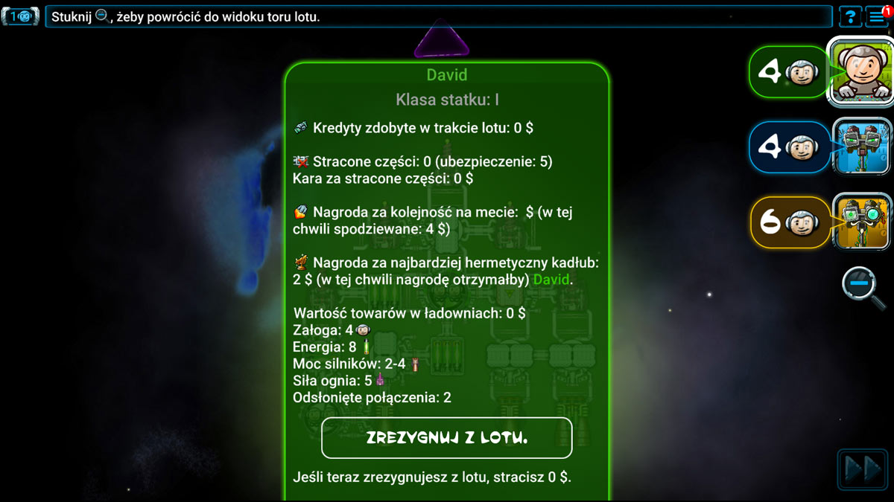

Lot

 Lot składa się z pewnej liczby kart przygód (w tym wypadku z 8).
Lot składa się z pewnej liczby kart przygód (w tym wypadku z 8).
 Tor lotu przedstawia relatywne pozycje statków podczas lotu. Wszystkie statki lecą nieustannie i ze stałą prędkością ku celowi podróży. Pewne przygody mogą zmienić ich relatywne pozycje w trakcie lotu.
Tor lotu przedstawia relatywne pozycje statków podczas lotu. Wszystkie statki lecą nieustannie i ze stałą prędkością ku celowi podróży. Pewne przygody mogą zmienić ich relatywne pozycje w trakcie lotu.
Lot dobiega końca, kiedy zostaną odkryte wszystkie karty przygód.
Widok
 Stuknij w portret gracza, żeby zobaczyć jego/jej statek.
Stuknij w portret gracza, żeby zobaczyć jego/jej statek.
 Możesz też stuknąć bezpośrednio w dany statek.
Możesz też stuknąć bezpośrednio w dany statek.
 Na ekranie podglądu statku kliknij w ikonę szkła powiększającego, aby powrócić do widoku toru lotu.
Na ekranie podglądu statku kliknij w ikonę szkła powiększającego, aby powrócić do widoku toru lotu.
Panel informacyjny
Panel informacyjny jest dostępny z ekranu podglądu statku dowolnego gracza. Stuknij w zakładkę na dole ekranu, aby wyświetlić panel informacyjny.
 

Panel informacyjny zapewnia mnóstwo przydatnych informacji:
- Imię pilota.
- Klasę jego statku (im większa cyfra, tym większy statek).
- Liczbę kredytów zarobionych podczas przygód w trakcie danego lotu.
- Ubezpieczenie – maksymalna suma, jaką gracz będzie musiał zapłacić za stracone części.
- Liczba straconych po drodze części.
- Suma, jaką gracz będzie musiał zapłacić za stracone części.
- Nagroda za ukończenie lotu (gracze z przodu otrzymują większe premie).
- Nagroda za najbardziej hermetyczny kadłub (najmniej odsłoniętych połączeń).
- Całkowita wartość wszystkich towarów na pokładzie statku.
- Liczba członków załogi.
- Liczba baterii
 .
. - Moc silników.
- Siła ognia.
- Liczba odsłoniętych połączeń.
- Przycisk „Zrezygnuj z lotu”.
Stuknij w panel informacyjny, aby schować go ponownie na dole ekranu.
Karty przygód
Karty przygód przedstawiają wydarzenia, do których dojdzie podczas lotu. Karty te można znaleźć w lewym górnym rogu ekranu. Wszystkie pokazane tu karty mają poziom I. Przygody poziomów II i III są trudniejsze, ale zapewniają też większe nagrody. Podczas lotów z kartami przygód na wyższych poziomach będziesz mieć do dyspozycji większy statek.
Rewers karty stanowi wskazówkę co do kolejnej przygody. Podczas lotu I poziomu wszystkie karty również będą na poziomie I, ale już podczas lotów II i III poziomu talie będą zawierać mieszaninę kart różnych poziomów. Jeśli na wierzchu talii spoczywa karta poziomu III, kolejna przygoda z pewnością przyniesie dużą nagrodę albo duże kłopoty. Albo jedno i drugie.
Stuknij w talię, aby zapoznać się z kolejną przygodą!
Nadrabianie i utrata dni lotu
Niektóre karty mogą Cię zmusić do utraty dni lotu. Karty zapewniające nagrody mają w prawym dolnym rogu cyfrę. Ta cyfra to liczba dni lotu, które stracisz, jeśli zdecydujesz się na daną nagrodę. Dni lotu możesz również stracić podczas przeprawy przez strefę walk.
Gdy tracisz dni lotu – dobrowolnie lub przymusowo – Twój statek cofa się o wskazaną liczbę pustych pól na torze lotu. Na jednym polu nigdy nie może znajdować się więcej niż 1 statek, dlatego cofające się statki będą „przeskakiwać” mijane statki:
Jeśli lider
straci 2 dni lotu

Jeśli drugi gracz
straci
2 dni lotu

Jeśli obaj gracze
stracą 2 dni lotu

Analogicznie, gdy gracz nadrabia dni lotu, jego statek przesuwa się do przodu o wskazaną liczbę pustych pól, „przeskakując” mijane statki. Szansę na nadrobienie dni lotu daje wolna przestrzeń.
Czasem warto być liderem, a czasem nie.
Lider zawsze jako pierwszy dokonuje wyboru nagród. Nagrody zawsze będą go kosztować utratę dni lotu. Czasem warto odrzucić nagrodę, aby zachować przewagę nad innymi graczami.
Gracze lecący z przodu konwoju będą też musieli jako pierwsi walczyć z wrogami. Jeśli jesteś w stanie pokonać wrogów, masz szczęście. Jeśli nie, no cóż… Gracze lecący z przodu konwoju przegrywają również remisy wynikłe z karty strefy walk. Czasem warto znajdować się za innymi graczami.
Jeśli przetrwasz do końca lotu, otrzymasz premię za jego ukończenie, która będzie tym wyższa, im lepszą pozycję uzyskasz na mecie. Dlatego po rozpatrzeniu ostatniej karty przygody zawsze warto być na przedzie konwoju.
Pozyskiwanie towarów

Jeśli karta przygody pozwala Ci załadować na statek pewną liczbę towarów, możesz przeciągnąć odpowiednią liczbę towarów z okienka i upuścić je w swoich ładowniach. Możesz też w nie stuknąć (takie towary zostaną automatycznie przeniesione na Twój statek).
Najcenniejsze towary najlepiej jest trzymać w tych ładowniach, które mają najmniejszą szansę na zostanie zniszczonymi podczas lotu.
Podczas nowego załadunku zawsze możesz poprzesuwać posiadane towary, przeciągając je do innych ładowni.
Nadmiarowe towary gracz musi wyrzucić w przestrzeń kosmiczną. Możesz przeciągnąć odpowiednią liczbę towarów ze statku z powrotem do okienka albo po prostu stuknąć w wybrane ładownie (takie towary zostaną przeniesione automatycznie).
Lista cen pomoże Ci zdecydować, które towary wyrzucić, a które zatrzymać.


Czerwone towary są najbardziej wartościowe, ale należą do kategorii materiałów niebezpiecznych i mogą być przechowywane tylko w czerwonych ładowniach. W takich ładowniach możesz też trzymać żółte, zielone i niebieskie towary.
Dopóki masz miejsce w ładowniach, ładuj wszystko, co się da – nawet jeśli miałoby to oznaczać umieszczanie tanich towarów w czerwonych ładowniach. Podczas nowego załadunku gracz zawsze może poprzesuwać towary w ładowniach i wyrzucić te, których nie chce zatrzymać.
Jeśli zadowala Cię rozmieszczenie towarów, kliknij w ikonę  , aby zaznaczyć gotowość do kontynuowania gry.
, aby zaznaczyć gotowość do kontynuowania gry.
Utrata towarów
Jeśli karta przygody nakazuje Ci odrzucić pewną liczbę towarów, jako pierwsze stracisz te najbardziej wartościowe. Napastnicy zabiorą je automatycznie, nie będziesz mieć szansy zdecydować, z których ładowni mają je zabrać. Jeśli nie posiadasz wymaganej liczby towarów, różnica zostanie pokryta w bateriach . Jeśli i baterii
. Jeśli i baterii  zabraknie, nie musisz oddawać już nic więcej.
zabraknie, nie musisz oddawać już nic więcej.
Utrata załogi
Za niektóre przygody otrzymasz nagrodę tylko wówczas, gdy zrezygnujesz z pewnej liczby członków załogi. Inne przygody nakażą Ci odrzucić pewną liczbę członków załogi jako karę. W obu przypadkach gra przejdzie do widoku Twojego statku i podświetli kabiny, pozwalając Ci wybrać członków załogi, których stracisz. Stuknij w kabinę, aby przewinąć możliwe opcje. Kosmitów również uważa się za członków załogi (ich też możesz stracić). Jeśli zadowala Cię Twój wybór, kliknij w ikonę  , aby zaznaczyć gotowość do straty wybranych członków załogi.
, aby zaznaczyć gotowość do straty wybranych członków załogi.
Jeśli na Twoim statku nie pozostanie ani jeden ludzki kosmonauta, Twoją jedyną opcją będzie rezygnacja z lotu tuż po zakończeniu rozpatrywania obecnej karty przygody.
Trafienia w statek
Twój statek zmierzy się z wieloma niebezpieczeństwami. Niektóre z nich mogą Cię kosztować utratę części! Poniżej znajduje się lista rzeczy, które mogą Cię trafić, a także sposoby, jak się przed nimi chronić:
- Przed uderzeniami małych meteorów chroni solidna konstrukcja statku – meteory odbijają się od gładkich stron części, ale nie od odsłoniętych połączeń. W tym drugim przypadku musisz zużyć 1 baterię , aby aktywować generator osłon chroniący tę stronę statku, albo trafiona część zostanie zniszczona.
- Przed uderzeniami dużych meteorów chroni ostrzał z dział. Jeśli nie poradzisz sobie z dużym meteorem, zniszczy on trafioną część.
- Przed lekkim ostrzałem chronią osłony. Musisz zużyć 1 baterię , aby aktywować generator osłon chroniący tę stronę statku, albo trafiona część zostanie zniszczona.
- Nic nie ochroni statku przed ciężkim ostrzałem. Zniszczy on po prostu trafioną część.
Jeśli Twój statek zostanie trafiony (nie chcesz lub nie możesz go ochronić), trafiona część zostanie zniszczona. To może z kolei spowodować odłączenie od statku kolejnych części. W takim wypadku one także ulegną zniszczeniu.
Jeśli w wyniku trafienia Twój statek zostanie podzielony na 2 części, musisz zdecydować, którą częścią będziesz lecieć dalej do celu podróży, a która zostanie zniszczona. Dokonaj wyboru, klikając w wybraną część statku. Części, które po zakończeniu lotu nie są połączone z Twoim statkiem, uważa się za utracone podczas lotu.

Rezygnacja z lotu
Możesz zostać zmuszony/a do rezygnacji z lotu, zanim dotrzesz do celu podróży. Może nawet zrobisz to dobrowolnie. Takie rzeczy się zdarzają. Wyzysk i Spółka odholuje Cię do jednego ze swoich magazynów i pozwoli spróbować ponownie.
Jeśli się poddasz:
- Do końca lotu pozostaniesz widzem – nie wpłyną na Ciebie żadne karty przygód.
- Po zakończeniu lotu nie otrzymasz żadnej premii.
- Swoje towary sprzedasz za pół ceny.
- Nadal musisz ponieść koszt utraconych podczas lotu części.
Jeśli z lotu zrezygnują wszyscy gracze z wyjątkiem Ciebie, możesz kontynuować lot i spróbować samotnie rozpatrzyć pozostałe karty przygód. W takim wypadku ignorujesz jednak karty strefy walk i sabotażu (te karty dotykają graczy z najmniejszą mocą silników, siłą ognia i załogą). Nie jesteś najgorszy/a – jesteś najlepszy/a!
Utrata wszystkich ludzkich kosmonautów
Musisz zrezygnować z dalszego lotu, jeśli w wyniku działania karty przygody pokład Twojego statku opuści ostatni kosmonauta (kosmici nie potrafią sami pilotować statku). Może do tego dojść w wyniku zniszczenia ostatniej zamieszkałej kabiny, utraty załogi podczas lotu przez strefę walk, spotkania z handlarzami niewolników lub gdy wyślesz ostatnich kosmonautów na pokład porzuconego statku. Jeśli zdarzy się to w wyniku działania karty strefy walk, nie rezygnujesz z lotu, dopóki wszystkie efekty danej karty nie zostaną rozpatrzone.
Lot przez wolną przestrzeń bez silników
Dzięki inercji Twój statek może ukończyć lot nawet bez silników, o ile jednak nie zostanie odkryta karta wolnej przestrzeni. Jeśli podczas rozpatrywania karty wolnej przestrzeni moc Twoich silników wynosi 0, musisz zrezygnować z dalszego lotu.
Dobrowolna rezygnacja z lotu
Czasem opłaca się zrezygnować z lotu i zminimalizować dalsze straty. Możesz dobrowolnie zrezygnować z lotu, klikając w swój portret. Zostaniesz przeniesiony do ekranu swojego statku. Stuknij w zakładkę na dole ekranu, aby wyświetlić panel informacyjny, a następnie kliknij w przycisk „Rezygnacja z lotu”.
Koniec podróży
Lot dobiega końca, gdy ostatnia karta przygody zostanie rozpatrzona. Teraz przyszedł czas na otrzymanie nagród (i zapłatę kary za części utracone podczas lotu)!